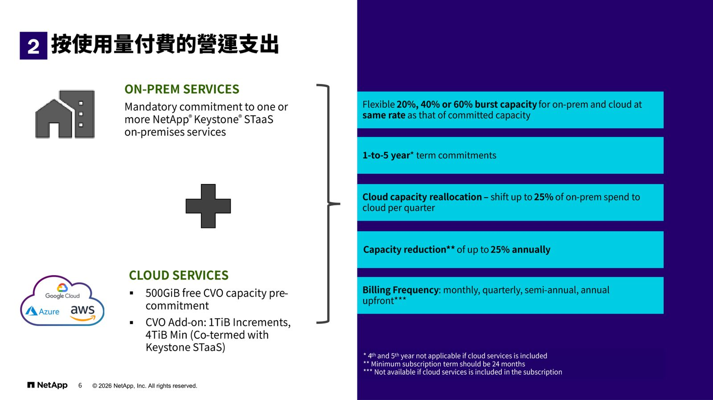
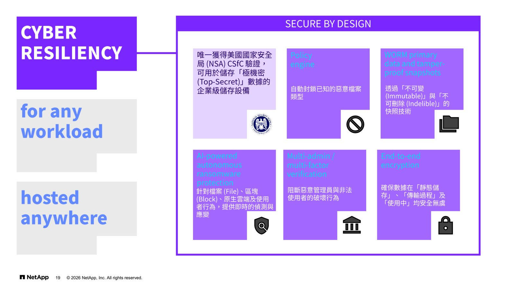
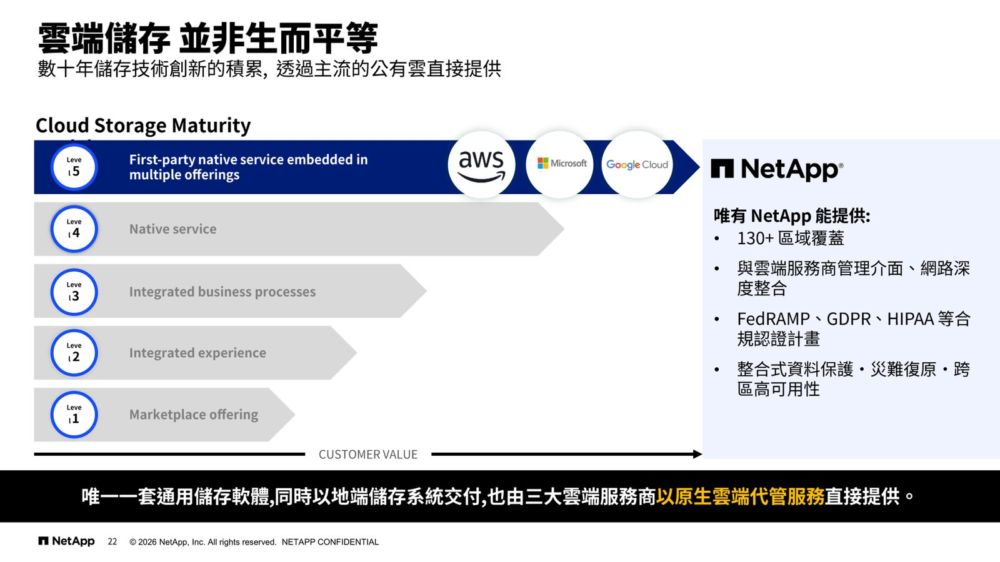
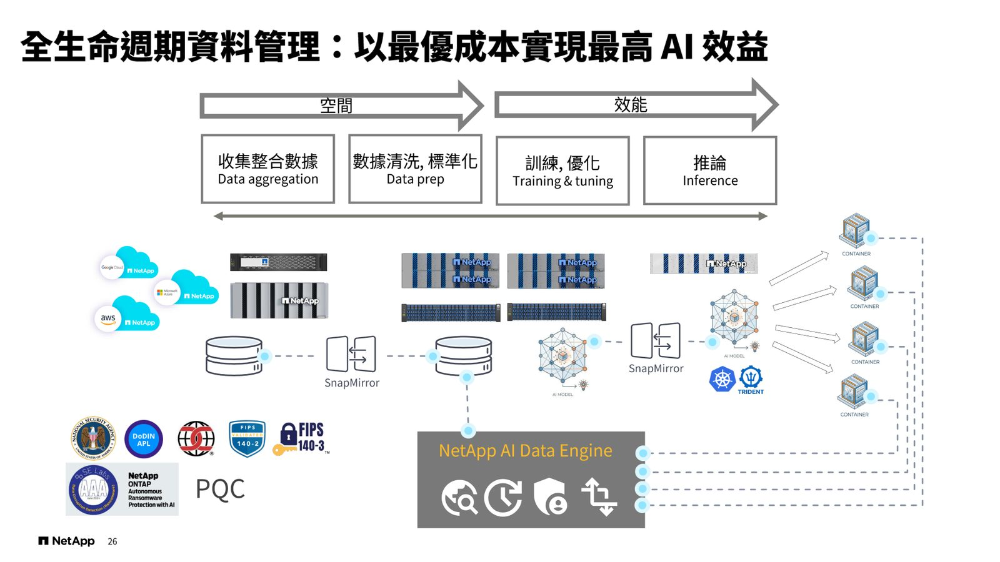

摘要
本場演講由 NetApp 資深技術顧問 Will Huang 主講，介紹 NetApp 統一資料平台如何隨時代變化彈性擴展同時維持簡單管理，涵蓋橫向擴展架構、按使用量付費的營運模式、簡化遷移工具 NetApp Shift Toolkit、地表最安全的儲存設備認證，以及原生雲端整合與專為 AI 打造的 NetApp AFX 儲存方案。
重點整理
- NetApp FAS/AFF 資料平台支援透過新增控制器實現橫向擴展，也可對單一控制器進行垂直擴充，支援 NFS、CIFS、iSCSI、FC、NVMe、S3 等多種協定
- 採用 Keystone STaaS 按使用量付費模式，提供 20%、40% 或 60% 彈性突發容量，並可將最多 25% 的地端支出每季轉移至雲端
- NetApp Shift Toolkit 可在數分鐘內完成虛擬平台轉換與遷移，減少停機與中斷、降低遷移與授權成本
- NetApp 是唯一經過美國國安局 CSfC 驗證、可合法用於儲存「最高機密（Top-Secret）」資料的企業級儲存廠商，並符合 FIPS 140-3、Common Criteria、DoDIN APL 等認證
- ONTAP 是唯一一套同時以地端儲存系統交付、也由 Azure、Google Cloud、AWS 三大雲端服務商以原生代管服務直接提供的通用儲存軟體，並推出專為 AI 工作負載打造的 NetApp AFX
重點圖片／架構圖




隨時代變化彈性擴展的統一資料平台
演講開場介紹 NetApp 的 data platform 作為智慧數據基礎設施的統一企業級基礎，涵蓋網路韌性（Cyber Resilience）、雲端轉型（Cloud Transformation）、資料基礎設施現代化（Data Infrastructure Modernization）與人工智慧（Artificial Intelligence）四大主軸，並以 AFF（TLC/QLC）與 FAS 兩條產品線支撐。其資料平台支援透過新增控制器實現橫向擴展，也可對單一控制器進行垂直擴充，並整合 ONTAP Select、ONTAP Cloud 與多雲環境下的 SAN、NAS、S3 協定支援。
按使用量付費的營運模式與虛擬平台支援
NetApp Keystone STaaS 提供地端服務與雲端服務兩種模式，地端服務為 NetApp Keystone STaaS 的強制承諾方案，雲端服務則提供 500GiB 的免費 CVO 容量以及以 1TiB 為單位增量的附加容量。方案提供 20%、40% 或 60% 的彈性突發容量（地端與雲端採相同費率），承諾期為 1 到 5 年，並可每季將最多 25% 的地端支出轉移至雲端，容量亦可每年最多縮減 25%，計費頻率涵蓋月繳、季繳、半年繳與年繳預付。此外，NetApp 也支援多樣化的虛擬化平台，並提供 NetApp Shift Toolkit 簡化遷移流程，能在數分鐘內完成轉換與遷移，減少停機時間與中斷、降低遷移與授權成本，並可分離開發測試與正式環境。
地表上最安全的儲存設備
NetApp 強調其儲存設備通過多項美國政府級安全認證，包括 FIPS 140-3（美國國家標準與技術研究院認證，產品加密模組符合美國政府安全標準）、Commercial Solutions for Classified (CSfC) Component List（美國國家安全局認證，可用於處理與儲存 Classified/Top Secret 資料）、Department of Defense Approved Product List (DoDIN APL)（已通過安全與互通性驗證，可實際部署於美國國防部網路環境）以及 Common Criteria（國際標準化組織認證，安全架構與設計經過獨立第三方評估）。NetApp 是唯一經過驗證、可用於儲存「最高機密」資料的企業級儲存廠商。在網路韌性方面，其解決方案具備 AI 驅動的自主勒索軟體防護、端到端加密、WORM 主要數據與防篡改快照、以及多管理員/多因子驗證機制。
原生雲端整合：唯一的通用儲存軟體
ONTAP data platform 是唯一一套通用儲存軟體，同時以地端儲存系統交付，也由 Azure NetApp Files、Google Cloud NetApp Volumes、Amazon FSx for NetApp ONTAP 三大雲端服務商以原生代管服務直接提供，並可透過 NetApp Cloud Volumes ONTAP 支援地端/混合雲環境。演講引用 Cloud Storage Maturity Model 五個等級（從 Marketplace offering 到 First-party native service embedded in multiple offerings），指出唯有 NetApp 能提供 130 個以上區域覆蓋、與雲端服務商管理介面及網路的深度整合、FedRAMP/GDPR/HIPAA 等合規認證計畫，以及整合式資料保護、災難復原與跨區高可用性。
NetApp AFX：專為 AI 打造的儲存方案
演講指出現有的儲存解決方案已難以支撐企業級 AI 的需求：傳統儲存（Legacy Storage）存在性能表現不足、架構缺乏彈性、擴充能力受限等問題；而 AI 新創業者（AI Start Ups）的方案則採用非標準協定、缺少資安功能、多租戶架構不完善。NetApp AFX 作為 purpose-built for AI 的解決方案，具備堅實可靠的企業級架構、內建 AI 智慧防勒索機制、無縫接軌的原生雲端整合、解耦式架構、整合式 AI 數據管線與智慧化數據服務，透過 SnapMirror 等技術實現從數據收集整合、清洗標準化、訓練優化到推論的全生命週期資料管理，以最優成本實現最高 AI 效益。